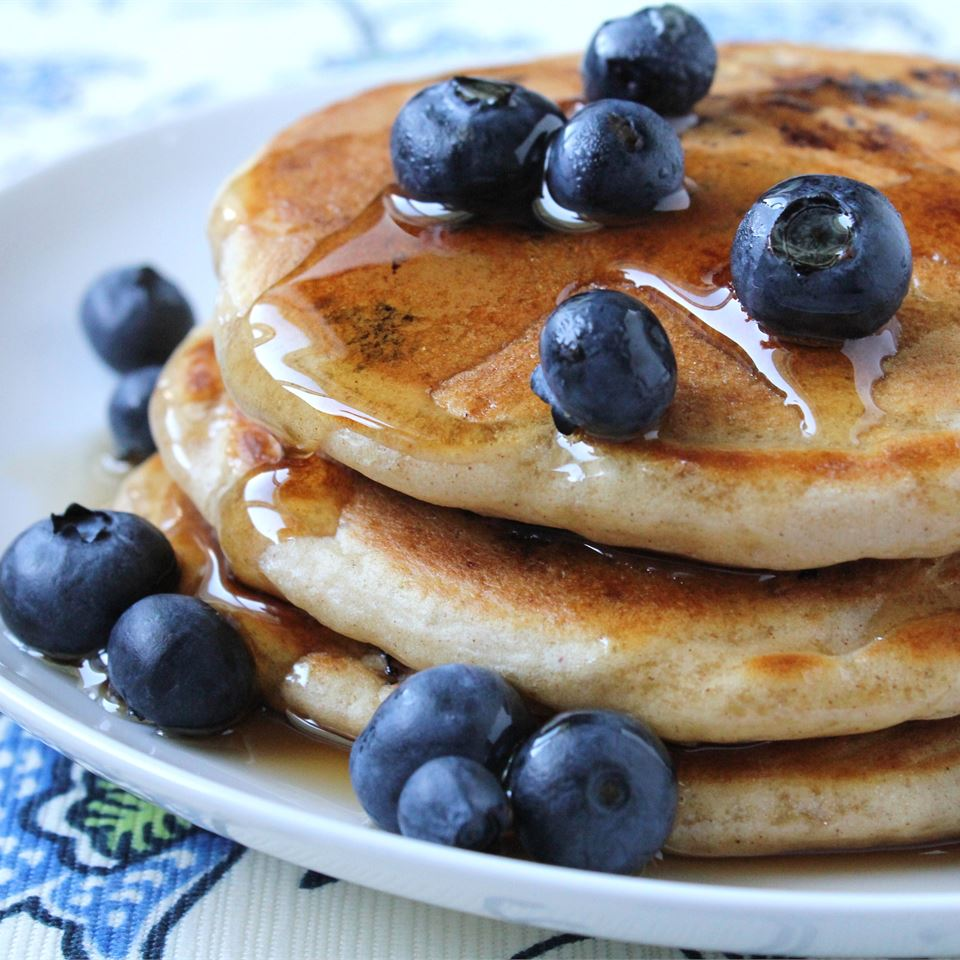
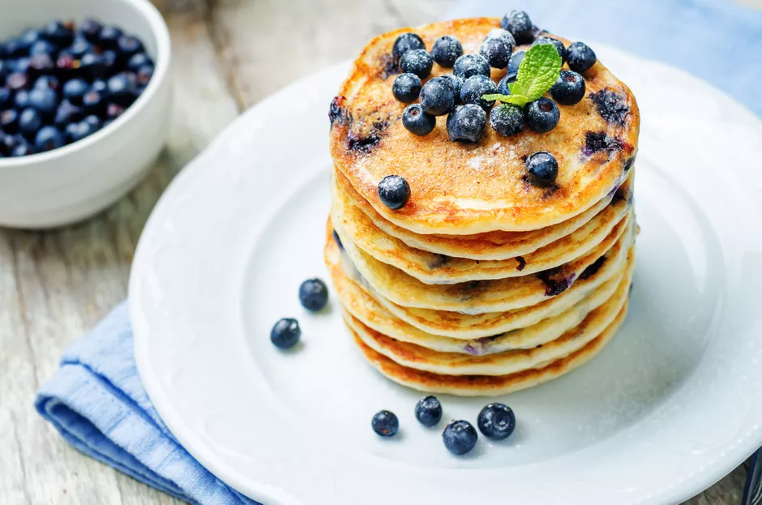
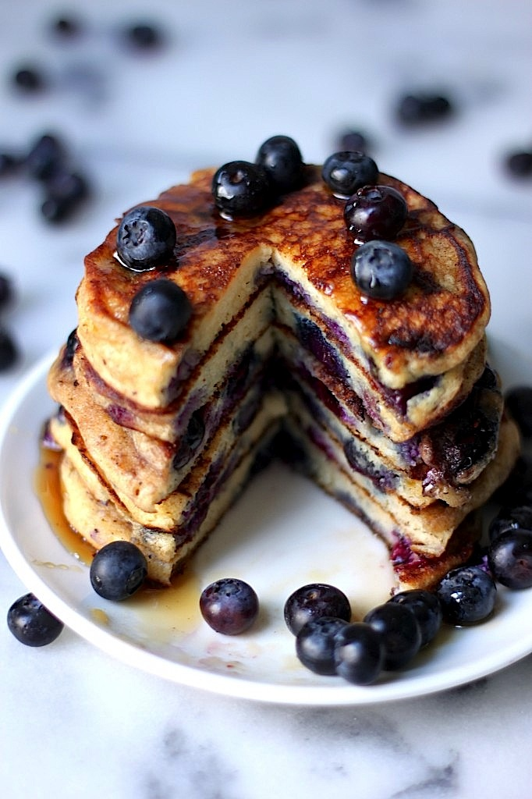

Well worth the hour wait! We serve them with butter and brown sugar.
  In a large bowl, sift together flour, salt, baking powder and sugar.
In a small bowl, beat together egg and milk. Stir milk and egg into flour mixture.
Mix in the butter and fold in the blueberries. Set aside for 1 hour.
Heat a lightly oiled griddle or frying pan over medium high heat.
Pour or scoop the batter onto the griddle, using approximately 1/4 cup for each pancake.
Brown on both sides and serve hot.